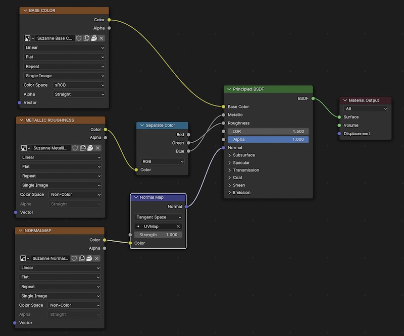
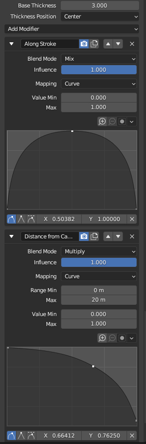
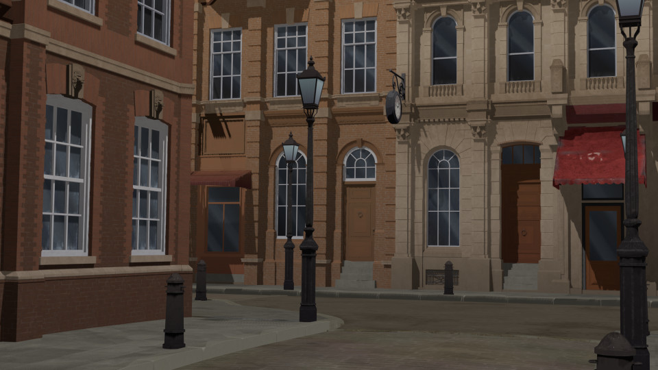
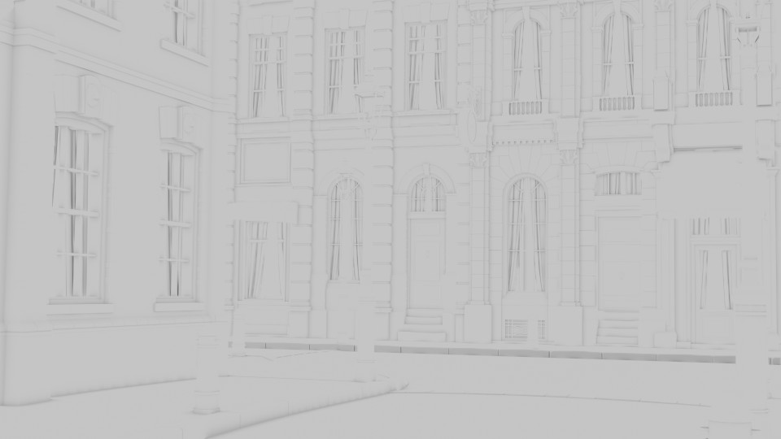

Miscellaneous Tools for 3D Backgrounds
Tags: posts, tutorial, blender, art,
This is a companion to this collection of tools I made for making 3D backgrounds, and contains a pretty bare bones description of what these tools do and how to use them.
If you're not familiar with running python scripts, I reccomend looking up a tutorial, here's some I found via a quick search:
- How to Run a Python Script in Windows (for combine_fotosketcher.py)
- Blender Scripting for Beginners: A Step-by-Step Guide (for render_cameras.py and toon_shader_process.py)
Batch Processing with Fotosketcher and Python with combine_fotosketcher.py
This technique takes a folder of images, and for each image adds layers of masked fotosketcher filters. Images must all be 1920x1080. You will need to install pillow.
I described a similar, non-automated technique in Tutorial: Post Processing 3D Renders.
For this example I'll describe how to process images in the "diner" folder.
Folder Setup
Within the main folder, there's the script combine_fotosketcher.py and the following subfolders:
- originals/: unfiltered images. Divided up into subfolders of collections of images, eg "diner".
- masks/: contains "w.png", "o.png", "w2.png", semi-transparent pngs with a painted texture.
- w/: where watercolour 1 filtered images are saved
- w2/: where watercolour 3 filtered images are saved
- o/: where oil paint filtered images are saved
- combined/: Finished images. Divided up into subfolders, eg "diner".
Batch processing in Fotosketcher
To create the images in the w folder:
- Choose "File: Batch Processing", select all images in "originals/diner". Set output folder to w. Select "overwrite existing images".
- Choose first watercolour filter.
Similarly save the third watercolour filter in w2, and the oil paint filter in o.
For each image img.jpg, this will save images called img_Fotosketcher.jpg in w, w2, and o.
Run the script
Making sure you have python3 installed, open a console (for example in Visual Studio Code) and run "python3 combine_fotosketcher.py".
For each img.jpg in diner/ this will layer the original img.jpg, then the images img_Fotoskletcher.jpg in w, w2 and o2, using the masks in masks/. The result will be saved as combined/diner/img.jpg.
Python scripting in Blender
Blender Python scripts can be used to do basically anything the user can do, in terms of editing, setting up nodes, rendering and saving, etc. They can be very useful for automation of repetitive tasks. Unfortunately the documentation is pretty sparse and confusing so I've mostly had to rely on finding other people's scripts to do similar things to what I want and then editing from there.
Running a python script is easy: Open up the text editor, load or create a python script, and then click the "play" button. Make sure the "fake user" option is selected so that it is saved when you close Blender.
Adding Toon Shaders To Imported glTF Meshes with toon_shader_process.py
The script toon_shader_process.py goes through all the materials in a collection and adds a toon shader and a few other changes. It's designed to work on imported glTF meshes. Unfortunately there's a few kinds of glTF mesh it doesn't work on very well, and in general I still go through each material and tweak it to look good. But it speeds up the most common tasks.
Setup
Append from "toon script.blend":- The text file toon_shader_process.py
- The node group "toon" which converts the output from a shader into toon shading.
- The node group "convert roughness" which flattens out the metallic and roughness inputs.
Types of Material The Script Works On
The script assume input in PBR format, specifically the kind of output you get from imported glTF files. See this post for more info.
Specifically, we have a bunch of inputs into a Principle BDSF Shader: a BASE IMAGE piped into Color, a ROUGHNESS METALLIC image split into rgb before being piped into roughness and metallic, and a Normal image piped in via a Bump Map.
It works if there's no ROUGHNESS METALLIC or NORMAL images, or a flat colour instead of BASE IMAGE. But it will not take into account alpha or emission data, and doesn't correctly work for color information inputted in any form other than a BASE IMAGE.
What the script does
- puts a "toon" group between the Principle BDSF and Material Output nodes
- Move the BASE IMAGE from the Color input of the Principle BDSF Shader to the toon group.
- Replaces any Separate RGB node with a "convert roughness" group.
- Lowers any normal map strength to 0.1
Running the script
Make a collection containing all the meshes you want to convert, and select it. In the text editor, open toon_shader_process.py and click the run script button.
You can test this out in "toon script.blend" on the folder "test script on this folder".
It shouldn't cause problems to run the script over a mesh twice but I make no promises >.>
Fixing errors
If there's alpha data input: Remove this input from the Principled BDSF and use it as the factor in a Mix Shader, mixing the output of toon with a transparent Shader.
If there's emission data input: Remove this input from the Principled BDSF and use it as the factor in a Mix Shader, mixing the output of toon with an Emission Shader. See "toon script.blend" for an example.
If there's Color input that's not a Base Image: Remove this input from the Principled BDSF and connect it to the Color input of toon.
There may be other kinds of errors but these are the main ones I encounter.
Improving the appearance
Use the kinds of techniques described in More On Toon Shading. It can also look good to mix in some of the sorts of gradients used in Making A Low Res Environment In Blender.
Rendering multiple outputs from multiple cameras
NOTE: There's more efficient ways of doing most of this in Blender 5. See Multiple File Outputs in Blender 5.0.
This goes through all the cameras in a selected Collection and saves the render, lines, mist, and ambient occlusion to separate folders. Unfortunately I can't figure out how not to have the frame number added to the end of every image.
It does this via the compositor, so may mess up any existing compositor nodes.
Setup
- In "Render Settings" turn on Freestyle and Film -> Transparency.
- In "View Layer" turn on Mist and Ambient Occlusion. Scroll down to Freestyle Settings. Click "Render as render Layer".
- Tweak the Freestyle Settings to your personal taste.
- Add "render_cameras.py". Edit the "path" variable to save in the folder you want, and "current folder" to whatever image set is being edited, eg "diner".
- Select "Use nodes" in the compositor.
How I set up my freestyle lines
Two line styles: Outline, and Internal Lines.
Both have two Stroke Width modifiers which multiply the width by curves. One modifier is along the stroke, curving from zero to one to zero again. The other is "Distance from camera", curving from 1 when the distance is zero to zero when the distance is around 20, depending on the scene. 
Outline is thicker (3-4 px) but only uses Sillouhette. Internal Lines is thinner (2-3px) and uses Sillouhette, Crease, and Border.
Sometimes I make Internal Lines lower opacity but this can make my computer crash.
Running the Script
Put the cameras you want to render with into a collection, then select it.In the text editor, open "render_cameras.py" and run it. This will set up the compositor and then render and save all the images into images named after each camera and in folders names lines/ao/renders/mist.
After this, if you want to tweak your scene and rerender without resetting the compositor, comment out the line "setup()" in render_cameras.py.
The script saves the following files:
Render: 
Lines:

Mist (distance from camera):

Ambient Occlusion/ao (corner shadows): 
In future I may also save the Bloom which makes light sources and bright areas glow.